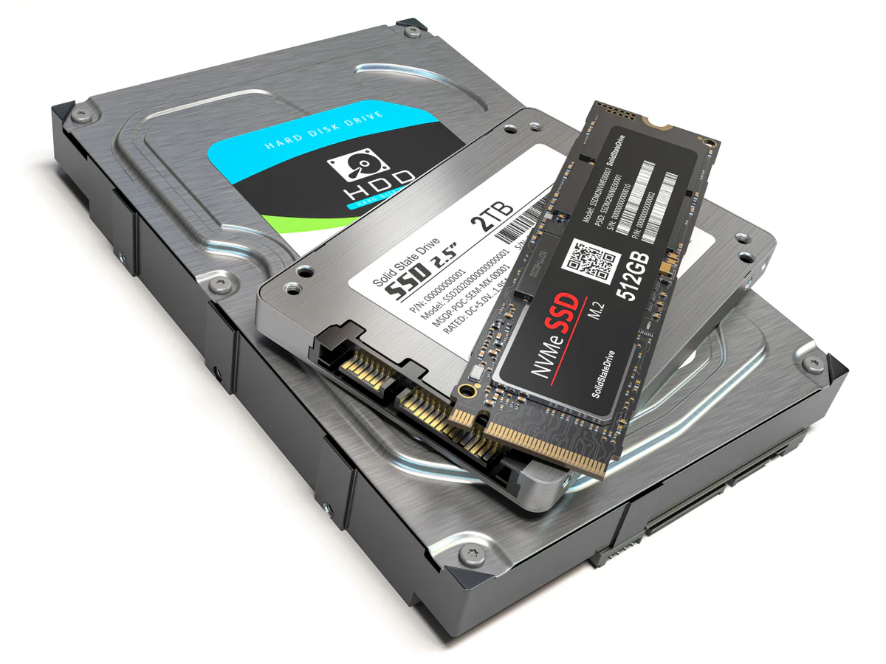
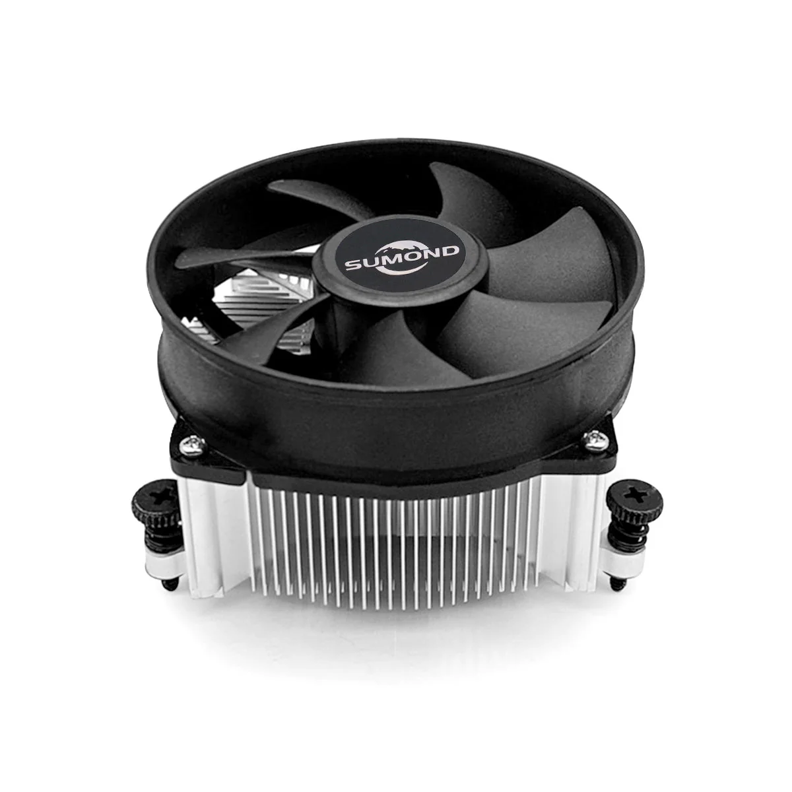

Hardware is the physical component of a computer that runs tasks instructed by the software. These two are complementary, as neither can run independently. The software consists of machine-readable code that tells the computer what to do and when to do it (Awati & Rosencrance, 2021).
Internal hardware consists of:
CPU (Central Processing Unit)
It is the essential part of any computer system. Mainly composed of the main memory, control unit, and arithmetic logic unit. The control unit of the CPU regulates and integrates the operations of the computer. It selects and retrieves instructions from the main memory in proper sequence and interprets them to activate other functional elements of the system at the right moment to perform their respective operations. The arithmetic logic unit receives all input data transferred from the main memory for processing. This involves the four basic arithmetic operations: addition, subtraction, multiplication, and division (The Editors of Encyclopaedia Britannica, 2025).

Motherboard
A motherboard, formerly known as “planar” from the first motherboard in 1981 in IBM personal computers, is often referred to as the “backbone” or “spine of a computer.” It connects all of a computer's components. Motherboards come in many types, all with the same basic parts, each made to work with different types of processors and memory (Volle & Adam, 2023).

RAM (Random Access Memory)
RAM (Random Access Memory): The RAM is a storage component that stores temporary data, so once a computer system shuts down, that data is erased. This is basically the short-term memory of a computer, as it helps computers run programs and process information faster (GeeksforGeeks, 2025).

Internal Storage Drives (SSD & HDD)
Internal Storage Drives (SSD and HDD): The storage drives serve as repositories for large amounts of data saved for later use, and they also hold the operating software. This is the computer’s long-term memory compared to the capacity of RAM.
Power Supply Unit (PSU)
The Power Supply Unit is basically the hardware that regulates direct current (DC) output voltage to the precise tolerances needed for contemporary computing components in addition to converting alternating high voltage current (AC) into DC (GeeksforGeeks, 2025).

GPU (Graphics Processing Unit)
GPU (Graphics processing unit): The GPU is used for a lot of video and graphics rendering, although it’s popular in both the gaming and AI industries. Originally designed for accelerating the rendering of 3D graphics, over time it developed to be more programmable, further enhancing its capabilities (What Is a GPU? Graphics Processing Units Defined, n.d.).

Heat Sink
Heatsinks: These are used in all electronic devices in computers; heatsinks allow them to perform heavy tasks while keeping them at a stable temperature, to prevent overheating and damaging their components. It is typically made of a thermally conductive material such as aluminum or copper, allowing the heat to be absorbed and dispersed generated by the electrical components (What Is a Heat Sink & How Does It Work?, 2023).
The external hardware of the computer is mainly the peripheral components, such as the input and output devices.
Input Devices:
-Keyboard
-Webcam
-Mouse
-Scanner
-Microphone
Output Devices:
-Monitor
-Printer
-Speakers
References
- Awati, R., & Rosencrance, L. (2021, October 6). Computer hardware. Search Networking. https://www.techtarget.com/searchnetworking/definition/hardware
- GeeksforGeeks. (2025, July 23). Random Access Memory (RAM). GeeksforGeeks. https://www.geeksforgeeks.org/computer-science-fundamentals/random-access-memory-ram/
- The Editors of Encyclopaedia Britannica. (2025, October 17). Central processing unit (CPU) | Definition & Function. Encyclopedia Britannica. https://www.britannica.com/technology/central-processing-unit
- Volle, & Adam. (2023, April 21). Motherboard | Definition, History, & Facts. Encyclopedia Britannica. https://www.britannica.com/technology/motherboard
- What is a GPU? Graphics processing units defined. (n.d.). Intel. https://www.intel.com/content/www/us/en/products/docs/processors/what-is-a-gpu.html
- What is a Heat Sink & How Does it Work? (2023, May 28). https://www.lenovo.com/ph/en/glossary/what-is-heat-sink/
- GeeksforGeeks. (2025, July 23). What is Power Supply Unit (PSU)? GeeksforGeeks. https://www.geeksforgeeks.org/computer-science-fundamentals/what-is-power-supply-unit-psu/